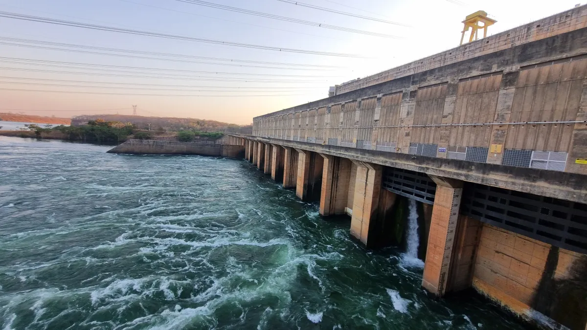

03 de Março, 2026
2026 será ano desafiador para gestão da água no Brasil, diz diretora da ANA
Larissa Rêgo afirma que monitoramento foi intensificado desde o fim de 2025 e alerta para desafios crescentes na gestão de reservatórios diante de mudanças no regime de chuvas
Ler mais
19 de Março, 2026
Estudo revela piora na qualidade da água em rios de 14 estados brasileiros
Apesar da situação preocupante, em mais de 80% dos pontos analisados a água foi considerada própria para múltiplos usos - como agricultura e indústria.
Ler mais
20 de Março, 2026
Milhões ainda vivem sem água tratada no Brasil, apesar da abundância hídrica
ANo Dia Mundial da Água, Funasa apresenta soluções em escala e mais de R$ 4 bilhões em ações para enfrentar desigualdade no acesso
Ler mais